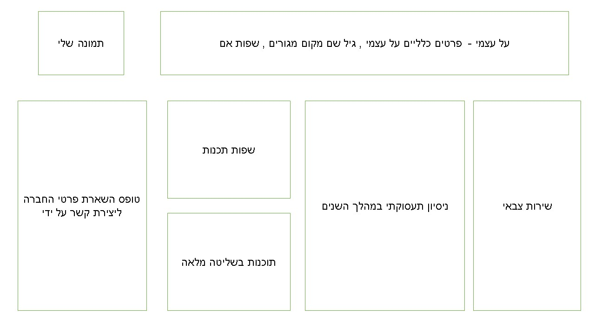

Tal Bracha CV - planning and design
UX answers:
- The site is intended for recruiters for high-tech jobs.
- The main purpose of the site is to get recruiters to contact me and get a job interview.
- The secondary purpose of the site is to expose as many recruiters as possible to my resume and to present an impressive site.
- I want the user to view my resume and be able to get details to contact me.
- The success measure is how many job interviews I will receive
- The content world to which the site refers is the high-tech world, similar to the content world on LinkedIn
UI Schema:

- I will use Light shades of gray and yellow, and if necessary highlight blacks or dark gray
- font-family: Ariel , the font will be Ariel , in diffrents size and bolt , and also cursive font
- I will add a representative photo of myself to the site